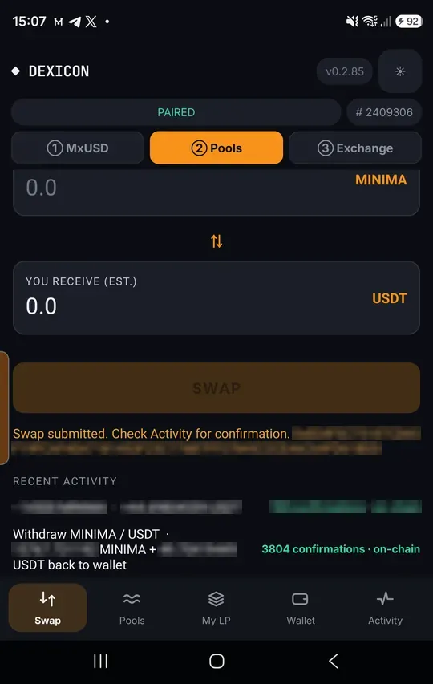
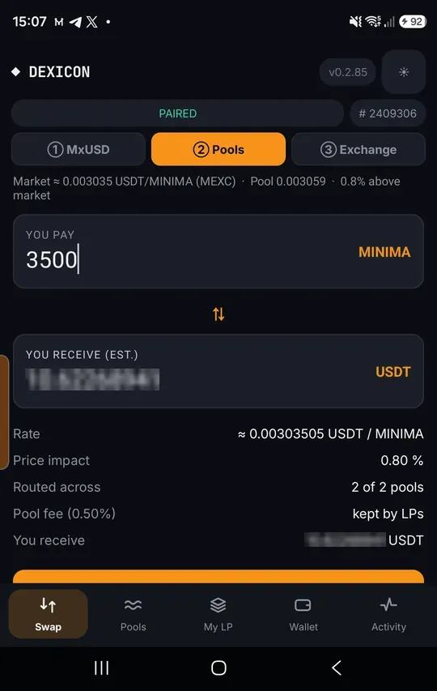
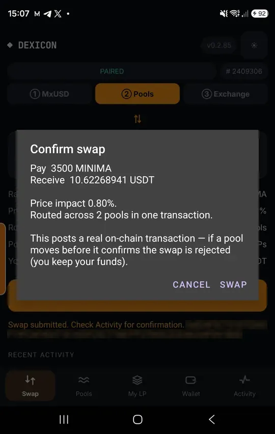
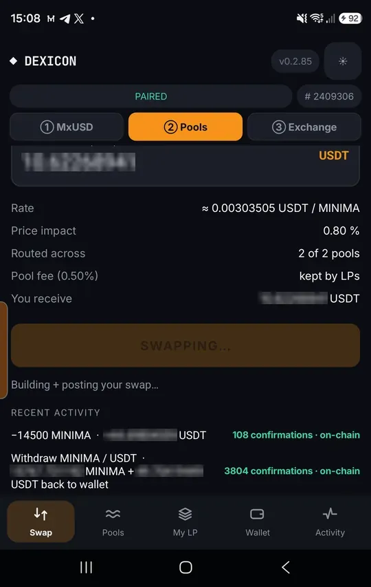
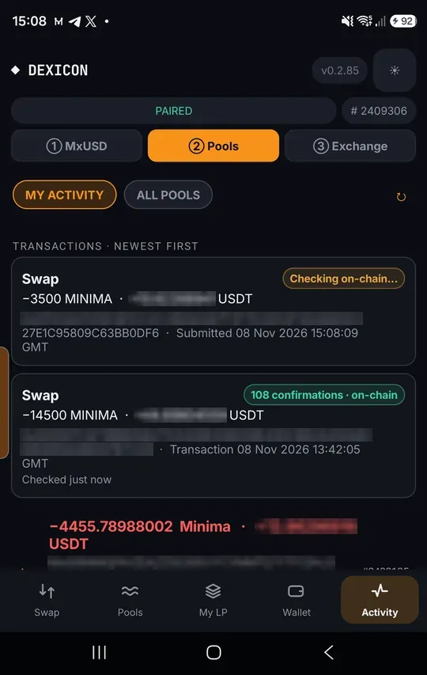
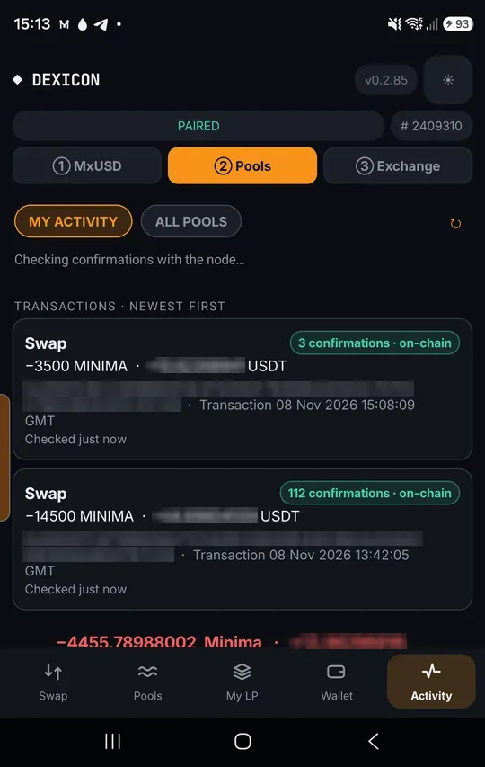

Swap against the pools
Trade MINIMA and MxUSD straight against every pool at once. One on-chain transaction, split best price first; it either completes fully or not at all.
Open Pools › Swap
Tap ② Pools, then Swap. The pool price is shown next to the market price so you can compare.

Enter an amount
The quote shows the rate, the price impact and how many pools it routes through. The 0.5% fee is kept by the pools’ owners.

Confirm
The confirmation repeats the exact amounts.
If a pool moves before your transaction confirms, the chain rejects it and you keep your funds.

It posts on chain
Your node builds, signs and posts the swap. There is no counterparty to wait for.

Check it in Activity
My activity lists the swap with its full transaction id.

Confirmed
The confirmation count climbs block by block. The coins are in your wallet from the first one.
